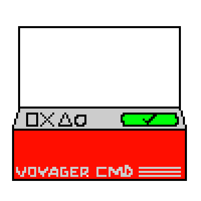

your ring is: …
a message to the unknown
your ring is linked to this browser. messages travel between rings and may take up to a day to arrive.
incoming messages
messages from other rings will appear here as little rockets. you can read each one when it reaches your ring.